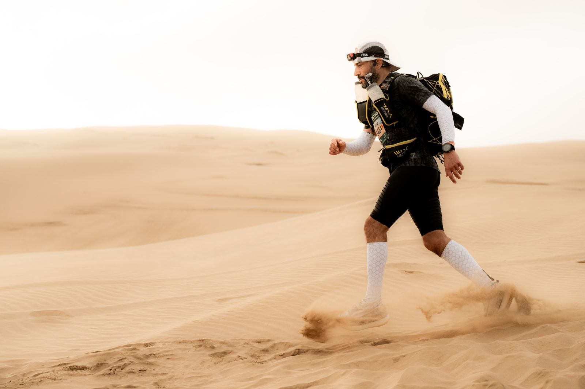

Steun
Koop een kilometer
Elke kilometer van Eigen Koers is € 12 waard. Daarvan gaat € 10 naar Casa Legal en € 2 naar de tocht.
Samen naar € 60.000
Elke kilometer telt.
Waar je bijdrage naartoe gaat
€ 12 per kilometer
5.000 kilometer × € 12 = € 60.000
Het goede doel
Casa Legal: alle hulp onder één dak
Casa Legal is een innoverende vzw met een holistische aanpak. Het is een one-stop shop voor juridische hulp op verschillende domeinen en psychosociale ondersteuning.
Voor mensen in een kwetsbare situatie verlaagt dat de drempel enorm. Ze moeten niet van loket naar loket, en hun verhaal niet telkens opnieuw doen. Op één plek krijgen ze juridische hulp, en de steun die ze nodig hebben om hun leven op te bouwen. Het is exact de soort hulp die Maz gemist heeft toen hij 13 jaar geleden in een precaire situatie zat.
De holistische aanpak is zo vernieuwend dat ze wetenschappelijk onderzocht wordt. In het project Scala Legal (2025 tot 2028) bestuderen onderzoekers van de ULB en UCLouvain welke impact de werking van Casa Legal heeft, en hoe ze ook elders kan werken.
Lees hier meer over Casa LegalOnder één dak
- Advocatenmet verschillende expertises
- Maatschappelijk werkersvoor alles wat rond een dossier speelt
- Psychologenvoor wat iemand met zich meedraagt
Ik geloof dat één persoon het verschil kan maken. Een advocaat veranderde mijn leven. Jouw bijdrage, hoe klein of groot ook, maakt een wezenlijk verschil voor mensen in een kwetsbare situatie.Maziar
Vragen